На 63-й день протесту влада Януковича почала убивати українців. Переважно з вогнепальної зброї, спочатку по одному.
22 січня Україна відзначає День Соборності — свято єднання різних регіонів в одну державу. У перші ж години святкового дня смертельні вогнепальні поранення отримують троє беззбройних демонстрантів: Сергій НIГОЯН з Дніпропетровщини, Михайло ЖИЗНЕВСЬКИЙ (білоруський емігрант) із Київщини і Роман СЕНИК з Галичини.
До масових убивств на вулицях Києва залишається 27 днів.
Ця розповідь — про тих, хто загинув під час протестів у центрі Києва 18-20 лютого 2014 року. Незалежно від того, з якого боку барикад вони розпрощалися з життям.
Слід наголосити, що наш матеріал не є розслідуванням чи спробою винести вирок до завершення суду. Для початку варто впорядкувати всю наявну інформацію щодо обставин смерті цих людей: хто, коли, де і як отримав фатальне поранення?
Щоб це зробити, ми звернулися до трьох груп джерел:
Але наявні (станом на початок березня 2017 р.) ДАНІ НЕ НАДАЮТЬ УСІЄЇ ВИЧЕРПНОЇ інформації. Тому не обійшлося без припущень, особливо щодо смертей 18-18 лютого. Cправа ще дуже далека до завершення.
Щоб з’ясувати всі деталі трагічних подій, які сталися упродовж фінальних днів масового протесту, Департаменту спеціальних розслідувань ГПУ знадобиться ще кілька місяців, якщо не років. Ми теж “копатимемо”, оновлюючи цей проект з кожним уточненим фактом. Будемо вдячні за будь-яку допомогу у встановленні істини.
Детальніше про використані джерела і методологію можна прочитати тут.
Напередодні досягнуто перемир’я. Майдан звільняє Київраду і частково розблоковує Грушевського, відкривши проїзд крізь ряди барикад. До 18 лютого всі масштабні прояви насильства під час вуличних акцій у Києві відбувалися саме на цих барикадах.
Політична опозиція сподівається, що частина фракції Партії регіонів підтримає ідею обмежити владу Януковича через повернення до Конституції 2004 року.
Для тиску на парламент вранці 18 лютого 2014 року до ВР вирушає «мирний наступ». При цьому настрій учасників ходи далеко не мирний — минуло три місяці з початку акції протесту, а влада так і не дослухалася до жодної вимоги Майдану.
Події того дня досі найменш досліджені. Особливо це стосується географії насильства в урядовому кварталі – у відкритих на сьогодні даних зустрічаються не конкретні адреси, а «Маріїнський парк» або «вул. Інститутська».
В таких випадках ми визначали ОРІЄНТОВНЕ МІСЦЕ отримання смертельних поранень з відповідним зауваженням в описі. Орієнтувалися на загальну хронологію сутичок, час смерті (виявлення тіла) і характер травм. Час подій вказаний приблизно.
08:00На Майдані формуються колони демонстрантів. Їх прикривають бійці Самооборони — в захисному спорядженні (каски, бронежилети, щитки) і з палицями для відбиття можливої атаки силовиків.
Тим часом на Парковій алеї з 8-ї ранку розвантажуються автобуси з масовкою Антимайдану. Переважно організовано завезені бюджетники, але трапляються й міцні спортсмени.
Верховну Раду і частину Маріїнського парку оточили чотири кордони внутрішніх військ та «Беркуту».
Напередодні частині “беркутівців” видають бойові — не травматичні — набої. Про це на суді посвідчить боєць харківської роти «Беркуту» Шаповалов. Повторна видача відбудеться увечері 18 лютого біля Жовтневого палацу.
Патрони зі свинцевою картеччю видаються розсипом, без жодних документів. Той із керівництва міліції, хто організував видачу цих патронів особовому складу, завідомо був націлений на вбивство.
09:30Колона Майдану виходить — Інститутською та Кріпосним провулком — на Грушевського. Відганяють КамАЗи, які блокували прохід. Сутички мінімальні. Частина майданівців пробує прорватися через кордон до ВР.
В кабінеті голови ВР Олександра Рибака тривають безрезультатні перемовини щодо внесення на голосування закону про Конституцію-2004.
10:10На перехресті Інститутська-Садова міліція з рушницями «Форт» почала калічити людей, розстрілюючи травматичними боєприпасами та кидаючи прямо в натовп світлошумові гранати.
Демонстранти підпалюють КамАЗи, які блокують Садову. Тоді ж декілька бійців ВВ здаються в полон. Самооборона захищає їх від розлюченого натовпу. Сутички тривають до обіду.
10:30Протестувальників у Маріїнському парку вже кілька тисяч. Вони оточують Антимайдан з трьох боків, від Грушевського до схилів Дніпра, виконуючи план із блокування ВР — поки «регіонали» і комуністи не приєднаються до голосування за Конституцію-2004.
Тут зосереджені найбільш дієві сотні Самооборони, які спершу були на чолі ходи, а тепер патрулюють периметр — тобто опиняються в найбільш віддалених від Грушевського кутках парку.
10:52Колона силовиків від Ради пройшла до Шовковичної. Несуть зелені ящики з якимись боєприпасами. Вочевидь, це російські світлошумові гранати «Заря-2» — так звані «спецзасоби посиленої дії», потужніші від українських спецзасобів.
За два місяці протистояння «Беркут» використав стільки гранат, що МВС змушене купувати їх у Росії — витративши на загальну суму 1,2 мільйонів гривень.
21 січня в Жулянах приземляється літак Ан-12, який вилетів із військового аеродрому під Москвою. Згідно з накладною МВС Росії, на його борту — понад 6 тисяч одиниць спецзасобів. Світлошумові гранати “Факел-С”, “Заря-2” і “Пламя-М”. Гранати аерозольні і димові. Подразнюючі гранати “РГР” - звичайні і “підвищеної потужності”.
Але й цього виявилося замало — настільки активно МВС використовувало нові гранати в ході сутичок на Грушевського. Вже 24 січня Ан-12 здійснює ще один рейс до Москви. Друга партія спецзасобів — понад 7,3 тисячі одиниць — приземляється у Гостомелі.
У супровідних документах ці вантажі значаться як “гуманітарна допомога”.
Нові гранати вводяться на озброєння міліції без жодної експертизи Міністерства охорони здоров’я, хоча звучать і діють значно ефектніше, ніж ті, що “беркутівці” використовували 30 листопада і 1 грудня.
Правоохоронці ще більше посилюють і без того посилену дію спецзасобів, додаючи до гранат саморобну “осколкову частину” — примотані клейкою стрічкою цвяхи, гайки чи інші дрібні металеві предмети.
Починаються сутички біля ВР. Масові вибухи світлошумових гранат.
За словами керівника департаменту спеціальних розслідувань Генеральної прокуратури України Сергія Горбатюка, саме з 11-ї години того дня на вулицях Києва знову використовується бойова зброя.
Перші вогнепальні поранення отримують винятково учасники демонстрації. Серед силовиків таких поранень досі не зафіксовано.
Поки триває мирна хода, беркутівці ховаються у дворах. Кілька з них вилазять на дахи. Стріляють згори в демонстрантів з рушниць “Форт”, кидають униз, прямо в натовп людей, світлошумові гранати.
11:20«Беркут», який пробував атакувати на Шовковичній, відганяють камінням. Тут мало підготовлених бійців Самооборони, переважно звичайні “цивільні”. Але вони чинять затятий опір, хоча ще місяць тому вважали подібні дії “радикалів” на Грушевського провокацією.
Хтось із лідерів Майдану повів частину демонстрантів з Інститутської до центрального офісу “регіоналів” (вул. Липська, 10).
~11:25Виламавши двері, протестувальники виганяють з офісу працівників, виносять партійні документи. Згодом ці папери допомагатимуть розслідувати злочини тодішньої влади. Перший поверх і підвал — у вогні від “коктейлю Молотова”.
Вочевидь, приблизно в цей час від диму в пожежі помирає 65-річний киянин Володимир ЗАХАРОВ. Він працював інженером у будівлі, в якій розміщувався офіс ПР. Його невістка Вікторія цитує офіційні дані медиків: “Розтин показав, що ударів не було, насильства теж, він просто задихнувся…”
Слідство підтверджує: на тілі загиблого не було ознак насильницької смерті. Захаров задихнувся чадним газом, затримавшись у задимленому приміщенні, щоб урятувати хоча б частину “заліза” з робочих місць офісних працівників.
Чи зараховувати загиблого до лав Небесної сотні? «Вікіпедія» зараховує, а на Інститутській є меморіальні фото Захарова. Він залишився на робочому місці, коли всі інші втекли. Ще одна жертва грандіозних і трагічних подій, яка теж заслуговує на пам’ять.
Смерть Захарова пов’язана з насильством. Але це - не вбивство. На відміну від більшості описаних тут смертей.
Тимчасом В Маріїнському парку Антимайдан закидує Самооборону камінням - з-за кордону міліції.
Тут же в таборі Антимайдану формуються бойові групи з «тітушок» (а, можливо, й інших прихильників Януковича). Бійцям роздають щити з написом «Міліція», залізні радянські каски, палиці, обрізки труб.
Ноу-хау влади — «тітушки», екіпіровані як Самооборона, діють у тісній зв’язці з «Беркутом».
Близько полудня спалахують повноцінні вуличні бої. Самообороні вдається відтіснити «вевешників» на кількадесят метрів, до табору Антимайдану. Внутрішні війська лишають після себе щити-загорожі, з яких майданівці намагаються збудувати оборонний периметр.
Тимчасом Нардепи-регіонали втікають із зали засідань. Кількість поранених швидко зростає. У бік майданівців летить каміння, «молотови» і «посилені» цвяхами і скетчем російські світлошумові гранати. Одному з командирів Самооборони така граната відриває кисть руки.
Демонстранти організовують у Будинку офіцерів (на розі Грушевського та Кріпосного провулку) медпункт для поранених.
У цей час Антимайдан готується до контратаки. Щоб бойовики могли відрізнити «своїх» від аналогічно екіпірованої Самооборони, їм роздають ідентифікаційні знаки — біло-червоні пов’язки на рукав. Кольорова гама навряд чи несе якесь ідеологічне навантаження, це просто нарізані шматки поліетиленової сигнальної стрічки, якою міліція зазвичай огороджує місця злочинів. “Ідейні” борці з фашизмом опозиції мають також “георгіївські” стрічки.
Кольори державного прапора України, якими так рясно прикрашений одяг майданівців, прихильники Януковича не використовують узагалі.
Сховавшись за шеренгою ВВ, антимайданівці в касках і з кийками добувають із тротуарних доріжок бруківку і підносять її на ковдрах ближче до місця ймовірного зіткнення. «Прихильники чинного президента» поділені на групи, ними керують координатори, які кажуть, що робити.
Зі сцени Антимайдану без угаву, дуже голосно крутять радянські воєнні пісні і закликають знищувати фашистів. Бо це ж не люди.
13:00Близько у тил майданівцям по Грушевського від Арсеналу заходять бойовики харківської організації “Оплот”, яка згодом почне воювати на боці Росії в Донбасі. Самооборона контратакою розганяє оплотівців. У “полонених” знаходять вибух-пакети з прикрученими цвяхами, а також травматичну зброю.
В Маріїнці — затишшя. А спікеру ВР Рибаку викликають “швидку", нібито через проблеми з серцем. Опозиція реєструє таки проект постанови про голосування за Конституцію 2004 року. Однак голосувати вже нікому.
На початку 13-ї години півсотні «беркутівців» ідуть у наступ від вулиці Пилипа Орлика, щоб відбити офіс. У перших лавах — силовики з помповими рушницями. За ними йдуть тітушки з залізними трубами.
Після короткої сутички офіс “регіоналів” переходить під контроль міліції. Мітингувальники відступають на перехрестя Липська-Інститутська.
13:20Чергова атака на розі Шовковичної та Інститутської. “Беркут” іде лавою, ведучи вогонь з “Фортів”. Журналістка Настя Береза не може знайти слів, щоб це описати. Двічі повторює найбільш шокуючу деталь: «Вони стріляли просто в натовп». Кожен постріл — влучний. Тих, хто впав чи затримався — лупцюють щосили кийками.
Вони стріляли просто в натовп». Кожен постріл — влучний. Тих, хто впав чи затримався — лупцюють щосили кийками.
Приблизно в цей же час співвласник корпорації “Індустріальний Союз Донбасу” Сергій Тарута телефонує Олександру Януковичу. Це старший син президента — лідер донецької “молодої команди". Саме йому Віктор Янукович довіряє найбільше, делегуючи з 2012 року все ширші повноваження.
Тарута просить свого донецького візаві переконати батька в неприпустимості силового варіанту. “Мабуть, [Майдан ] — це наша доля, — відповідає молодший Янукович. — Це наше випробування. Тож мусимо йти до кінця. Мусимо послужити країні, позбавити її від цих ідіотів”.
13:30Мітингувальників відтісняють по Інститутській — частину в бік Майдану, частину в бік Кріпосного провулку. Ще частина людей стоїть на Шовковичній за перехрестям. Від Верховної Ради до силовиків надходить підкріплення.
13:43“Беркутівці” остаточно беруть під контроль перетин вулиць Інститутська та Шовковична. Формують зі щитів “черепаху”, перекривши прохід Інститутською у бік Липської (до Майдану) та Кріпосного провулку (до Маріїнського парку). Через 10 хвилин підтягують сюди ще й водомет.
Вулиця Інститутська була єдиною комунікацією в урядовому кварталі, якою майданівці могли вільно маневрувати. Захопивши ключове перехрестя, силовики розчленовують учасників вранішньої демонстрації на дві ізольовані групи. Бійці Самооборони — найбільш підготовлені для вуличних сутичок — виявляються відрізаними від Майдану.
~14:00Зафіксовано сутички між Самообороною та «Беркутом» у Кріпосному провулку. Ця маленька вуличка з’єднує можливі шляхи відходу учасників ходи — Кловський узвіз і Грушевського (в бік Арсеналу).
Приблизно в цей час перестав виходити на зв’язок із рідними 57-річний Володимир КІЩУК — підприємець із Димера (Київщина). Його вбивають пострілом у потилицю в районі Кріпосного провулку.
Тоді ж помирає 44-річний охоронець із Києва Сергій ШАПОВАЛ, боєць 21-ї сотні Самооборони Майдану. У районі Кріпосного провулку в нього вистрілили мисливською картеччю, два шматки свинцю влучили в живіт та серце.
Приблизно в один час із Шаповалом гине Ігор СЕРДЮК (44 роки) — підприємець із Кременчука. Він будував барикаду на перехресті Кріпосного та Інститутської, щоб затримати прорив силовиків. Сердюку вистрілили мисливською картеччю прямо в обличчя.
Перепочивши, організовані в бойові групи тітушки під прикриттям внутрішніх військ і безкінечну «Священную войну» атакують Самооборону в Маріїнці.
Сили занадто нерівні, периметр ламається і звужується. А потім від Грушевського у фланг Самообороні заходять ВВ, перекриваючи єдиний шлях відступу.
ВВшники — переважно молоді солдати строкової служби — діють не гірше, ніж «Беркут», з азартом орудуючи кийками. За ВВ йдуть тітушки, які жорстоко добивають лежачих камінням та обрізками труб.
Боєць 3-ї сотні Мирослав Гай пізніше скаже ТЕКСТАМ, що саме в ті хвилини ясно усвідомив: домовитися із владою не вдасться. Хочеш вижити? Будь готовий убивати тих, хто прагне вбити тебе.
Cаме в ті хвилини ясно усвідомив: домовитися із владою не вдасться. Хочеш вижити? Будь готовий убивати тих, хто прагне вбити тебе.
14:15Від Самооборони в Маріїнці залишається близько 50 бійців, притиснутих до довгої сірої «сталінки» на краю парку — це будинок за адресою Грушевського, 9. Частині вдається потрапити всередину, їх переховують у своїх квартирах місцеві мешканці.
Під будинком і на цегляних доріжках парку лежать ті, кому не пощастило. Калюжі крові добре видно на лютневому снігу. Тих, хто у свідомості, ведуть у табір Антимайдану.
«Как два различных полюса, во всём враждебны мы, — лунає над бойовиськом. — За свет и мир мы боремся, они — за царство тьмы!»
Вочевидь, саме тоді смертельне поранення отримує 49-річний Андрій КОРЧАК — будівельник із Борислава (Львівщина). Десятника 3-ї сотні Самооборони забивають у Маріїнському парку, безжально калічачи.
Ушкодження грудної клітки спричиняє хронічну ішемічну хворобу серця, і Корчак помирає в лікарні, куди його привозить невідомий волонтер на «жигулях». Станом на 15:20 майданівець уже мертвий.
14:30Кореспондент «Української правди» повідомляє, що один із мітингувальників під обстрілом «Беркуту» завів і відігнав «у невідомому напрямку» одну з міліцейських вантажівок, що блокували вулицю Грушевського на розі з Кріпосним провулком.
Цей мітингувальник — Леонід Бібік, який щойно вирвався з м’ясорубки в Маріїнці. За допомогою міліцейського ГАЗу він планує розчистити демонстрантам шлях відходу — крізь заслони «Беркуту» на Кріпосному провулку до своїх, на Інститутську.
Розганяючи очманілих від такого повороту силовиків, Бібік веде машину провулком до перехрестя з Інститутською — тільки щоб виявити, що шлях на Майдан уже перекрито «Беркутом». Він ще примудряється розвернутися і виїхати назад на Кріпосний, при цьому два міліціонери розряджають свої травмати йому в голову, впритул.
Втрачаючи свідомість, Бібік усе ж тисне на газ і проривається до Грушевського. В цей момент під колеса машини вибігає 44-річний Сергій ДІДИЧ — сотник Самооборони, голова осередку партії «Свобода» одного з районів Івано-Франківщини. Дідича саме били «беркутівці», один із них женеться за Дідичем і теж ледь не потрапляє під колеса.
Сотник Самооборони помирає на місці — відкрита черепно-мозкова травма.
Через 1,5 роки Бібіка, який на той момент служив в АТО, засуджують і одразу ж амністують.
«Мирний наступ» провалюється, тому що тітушки і силовики в урядовому кварталі готові замахуватися на вбивство.
Хоча б частина з них не вагається натискати на спусковий гачок чи з розмаху проламувати залізною трубою череп іншої людини. Чого не скажеш про інтелігентів та селян із Самооборони Майдану, які вивішують на барикаді біля Будинку профспілок плакат із риторичним звернення до своїх опонентів: «УБИВАТИ, А ПОТІМ З ЦИМ ЖИТИ?»
Так влада знову підвищує ставки у протистоянні: «Ми готові не просто убивати і калічити, а робити це системно, десятками. А ви?»
Рішучість у застосуванні насильства забезпечила владі вражаючий результат. Згодом за кілька годин Майдан утратив ядро своїх захисників і всі територіальні здобутки попередніх 90 днів, скоротившись до клаптика довкола сцени.
По обіді 18 січня мало хто зі сторонніх спостерігачів сумнівається, що протест доживає останні кілька годин. «Ось і все», — пишуть зневірені у соцмережах.
І в цей момент найвищого тріумфу озброєних і натренованих поліцаїв над беззахисними цивільними громадянами Майдан приймає ставку.
За даними слідчих ГПУ, приблизно з 14-ї години того дня вперше фіксуються вогнепальні поранення працівників МВС.
Так на 90-й день протестних акцій Майдан береться за зброю. При цьому в самих демонстрантів почали стріляти з вогнепалу ще місяць тому.
Перехрестя Садової та Інститутської ще контролюється демонстрантами. Вони палять шини на «КамАЗах» і перекидуються бруківкою з кордоном ВВ.
14:56Перші повідомлення про вбитих майданівців. Леся Оробець: «Три трупи в Будинку офіцерів. Наших. Ще 7 при смерті. Швидкі не пускають!!!» Смерть трьох майданівців підтверджує лікар Ольга Богомолець.
“Регіонали” запрошують Турчинова на переговори до Януковича. В Адміністрацію президента група парламентерів з ВР добирається пішки — крізь барикади, вогонь і дим. На деяких заблокованих вулицях тривають запеклі сутички.
Після п’ятхвилинної істерики з матами і погрозами Янукович згоджується на компроміс: МВС припиняє стріляти й калічити, протестувальники повертаються на Майдан. Турчинов обдзвонює командирів Самооборони, повідомляючи про чергове перемир’я.
Два тіла в Будинку офіцерів — Кіщук та Дідич. Третій — Сергій ШАПОВАЛ.
На думку слідчих Генпрокуратури, до вбивства Кіщука, Шаповала і Сердюка причетний службовець харківського «Беркуту» Олександр Бєлов. У стволі його «Форту» виявлено сліди свинцю.
“ФОРТ-500” — гладкоствольна помпова рушниця вітчизняного виробництва, яка перебувала на озброєнні “Беркуту”.
Після убивств 22 січня МВС називало цю зброю не інакше як “спецзасіб для відстрілу боєприпасів несмертельної дії”. Йдеться про гумові — в термінології МВС “еластичні” — кулі та картеч (крупний дріб, розміром 0,5-1 см), споряджені у патрони 12-го калібру.
МВС не договорює, що калібр 12 мм - стандарт для гладкоствольної зброї. В такі патрони споряджається безліч різновидів боєприпасів. Скажімо, мисливські набої, в яких куля або картеч виготовлені зі свинцю.
У листопаді 2016 року суддя Апеляційного суду Києва Валерій Лашкевич звільнить Бєлова з-під варти, змінивши запобіжний захід на “нічний домашній арешт”.
15:05Демонстранти, які відступають з урядового кварталу вулицею Грушевського, намагаються збудувати барикаду з автобусів неподалік метро «Арсенальна» (навпроти поліклініки за адресою Мазепи, 2). Невдало — «Беркут» відтісняє їх до площі Слави.
15:10Тітушки влаштовують погром у будинку на Грушевського, 9 (біля Маріїнського парку), де переховуються вцілілі бійці Самооборони. Нишпорять під’їздами і горищами, намагаються вдертися до квартир. Кого знаходять — жорстоко б’ють. Полонених зв’язують і ведуть у табір Антимайдану.
26-річний Артем МАЗУР — охоронець із Хмельницького і боєць 15-ї сотні Самооборони — цього всього вже не бачить. Тому що перебуває у комі після того, як прихильники Януковича в Маріїнському парку проламали Артемові голову. Він помре в лікарні на початку березня, у графі «Причина смерті» напишуть «Відкрита черепно-мозкова травма».
Самооборона розгромлена. Ті, хто вцілів і не злякався, намагаються пробратися до Майдану. Інформація про перемир’я їх тільки дезорієнтує.
«Беркут» за підтримки водомету і тітушок знову атакує на перехресті Шовковична-Інститутська, цього разу з трьох боків. Женуть людей у бік Майдану, закидаючи їх камінням й «коктейлями Молотова».
«Беркут» валить демонстрантів із ніг ударами кийків і чобіт, тітушки добивають залізними трубами.
Один із постраждалих на Інститутській — 82-річний киянин Іван НАКОНЕЧНИЙ, офіцер ВМФ у відставці, найстарший із Небесної сотні. Наконечному трощать череп “металевим предметом”, через три тижні він помре в лікарні.
Не зміг утекти від «тітушок» і ще один майданівець похилого віку — 72-річний киянин Анатолій НЕЧИПОРЕНКО, охоронець гаражного кооперативу. Його теж відправляють у кому ударом по голові — закрита черепно-мозкова травма, вдавлений перелом кісток черепа. Нечипоренко помре в лікарні на початку квітня.
На дзвінки Турчинова з Верховної Ради Янукович не відповідає. Зате вдається додзвонитися до голови його адміністрації Андрія Клюєва, якого вважають одним із ідеологів розгону 30 листопада.
“ЦЕ ВІЙНА, - відповідає керівник АП на закиди Турчинова щодо наступу силовиків під час перемир’я. - А на війні всі засоби хороші”.
Не додзвонившись до Януковича, Турчинов телефонує Клюєву, розповідає про домовленості з Януковичам.
СБУ і МВС висувають опозиції ультиматум — «припинити протистояння» [тобто піти з Майдану] до 18:00.
16:06«Беркутівці» штурмують верхню барикаду на Інститутській — біля метро «Хрещатик». Двері верхньої станції зачиняються.
16.07...тому що рішенням голови КМДА київське метро — вперше за 53 роки свого існування — припиняє роботу. На всіх станціях, в усіх вагонах пасажирів просять залишити територію метрополітену.
16:10Внутрішні війська швидко прориваються крізь барикади на Грушевського, виходять на Європейську площу. Частину легендарних барикад розбирають, розширюючи проїзд - як потім виявиться, для бронетранспортерів.
Майданівці відступають до барикади на Хрещатику, біля Будинку профспілок. Плаката із запитанням «Убивати, щоб потім з цим жити?» тут уже нема — всім зрозуміло, що влада хоче війни на винищення, а не розмов. Барикаду все щe прикрашає інше звернення: «ПОЙМИТЕ НАС. ЗАДОЛБАЛО!»
Біля встановлених на Грушевського бетонних блоків чергують бійці ВВ. Вони теж пишуть заклики на своїй барикаді. Але звертаються не до демонстрантів. Взагалі не до зовнішнього світу звертаються.
Написи зроблені на чорним фломастером з ТИЛЬНОЇ сторони бетонного укріплення. Їхній адресат— десь усередині периметру.
“Дайте нам СТВОЛЬІ, — просять чорні літери. — ...Полную свободу исполнения законов”.
16:18Протестувальники знову займають КМДА.
16:20«Беркут» захоплює верхню барикаду на Інститутській (біля метро «Хрещатик»). Там виникає страшна тиснява, люди починають душитися.
Складена з мішків зі снігом верхня барикада мала тільки один вузенький прохід, оточений колючим дротом. Ця задумка повстанських інженерів ледь не призвела до масової трагедії.
Під час панічної втечі від «Беркуту» у вузький прохід набилися десятки демонстрантів. Так щільно, що почалася тиснява. Здавлені у живій пастці, притиснуті один до одного, вони не могли поворухнутися, а «Беркут» ходив по цій горі людських тіл, нещадно луплячи кийками.
Дехто з «беркутівців», навпаки, рятував життя, витягуючи хриплячих від задухи людей із завалу і захищаючи їх від своїх неадекватних соратників. Якби не людяність цих бійців, жертв у тисняві було б набагато більше.
Коли людський завал розібрали, на барикаді залишилися лежати тіла чоловіка і жінки. Ними виявилися інженер-енергетик із Броварів Антоніна ДВОРЯНЕЦЬ (61 рік) та 53-річний боєць Самооборони Зураб ХУРЦІЯ з Кіровограду.
Обидвоє померли від гострої серцевої недостатності. Вочевидь, спричиненої тиснявою і стресом.
Ще один мітингувальник - житомирянин Яків ЗАЙКО (73 роки), депутат І-го скликання ВР отримав інфаркт. За даними слідства, це сталося не на Інститутській вулиці, як ідеться в більшості джерел. Екс-нардеп помер в районі метро “Театральна”, де не було зіткнень. Ознак насильницької смерті чи побиття на тілі не виявлено.
На Європейській площі — кількасот військовослужбовців ВВ. Оточують підходи до Українського дому.
16:37«Беркут» з Інститутської захоплює майданчик біля входу до Жовтневого палацу — 20-го числа звідси стрілятимуть з “калашів” автоматники в чорній формі з жовтими пов’язками, а поки що тут шикуються ВВшники.
Передову позицію на схилах під Жовтневим займає еліта Внутрішніх військ — полк спецпризначення «Тигр» із Криму. Ще вранці вони брали участь у зачистці Маріїнського парку, а до Жовтневого потрапили через Інститутську, рухаючись слідом за “Беркутом”.
Це місце ВВшникам уже знайоме: саме їхній підрозділ допомагав «Беркуту» штурмувати Інститутську 11 грудня. “Тигри” ще продовжують шикуватися під палацом, коли в них з’являються перші поранені з вогнепальної зброї.
16:45Взявши під контроль терасу над торговим центром «Глобус», «беркутівці» кидають пляшки з запалювальною сумішшю далеко в бік Майдану. Спалахує кілька наметів.
Нижню барикаду на Інститутській, яка витримала штурм 11 грудня, теж утрачено за кілька хвилин.«Беркут» змушує її захисників відступити, закидавши світлошумовими гранатами з пішохідного містка над барикадою.
Вперше за три місяці протесту режим зайшов безпосередньо на Майдан.
16:50ВВшники розпочинають штурм Українського дому.
17:00Кореспондент ВВС повідомляє: «Повз ВР пронесли тіло мітингувальника без голови».
Ця новина разом із 10-секундним відеороликом викличе в революційних масах безліч чуток про нелюдську жорстокість міліції та Антимайдану.
Знайдуться «очевидці», що бачили, як «Беркут» і тітушки з садистською насолодою відрізали голови ще живим майданівцям. Говоритимуть про десятки заживо замучених і зниклих безвісти.
Слідство категорично спростовує ці чутки. Особу чоловіка на ношах ідентифіковано — це майданівець із Західної України. Не мертвий, хоч і з забинтованою головою. Він переживе ці страшні дні і повернеться додому.
17:10Нардепи від опозиції забирають із табору Антимайдану учасників «Мирного наступу», захоплених після побоїща в Маріїнському парку. 40 травмованих демонстрантів, «з них 23 важких». Усім їм медики Антимайдану надали першу допомогу.
17:15ВВ взяли Український Дім і розібрали барикаду на розі Хрещатика і Трьохсвятительської. Їхні підрозділи шикуються на Хрещатику, готуючись до фінального штурму.
І потрапляють під прицільні вистріли з бойової зброї.
На Хрещатику, навпроти будинку №12, застрелено двох бійців столичного гарнізону Внутрішніх військ. Це 20-річні солдати строкової служби, призвані з Чернігова — Максим ТРЕТЯК та Іван ТЕПЛЮК. Вогнепальні поранення в шию і голову, кулями з одного й того ж пістолета Макарова.
За всі три місяці протесту це перші насильницькі смерті правоохоронців у Києві. Минуло 28 днів від убивства Нігояна й Жизневського.
На момент загибелі військовослужбовців ВВ у майданівців уже мінімум 10 «двохсотих» — це за половину одного дня. Життя сімох із цих десяти вочевидь відібрали зумисно: трьох застрелили (Кіщук, Шаповал, Сердюк), ще чотирьох забили до коматозного стану (Корчак, Мазур, Наконечний, Нечипоренко).
Через тиждень у морзі знайдуть тіло ще одного учасника «мирної ходи» — житомирянина Віктора ПРОХОРЧУКА (35 років), який зник 18 лютого. За даними медиків, бійця Самооборони привезли туди вже мертвим. Труп з перерізаним горлом виявили «в одному з дворів Хрещатика» біля Майдану. Наразі ні ми, ні слідство не змогли дізнатися, коли саме і де вбили Віктора.
О пів на шосту сідає сонце. На Київ опускається ніч.
Не встигне вона закінчитись, як кількість убитих подвоїться.
Багато людей іде з Майдану, але приходить туди ще більше, незважаючи на оголошення про намір розігнати протест силою та новини про вбитих. Життям, свободою і здоров’ям у центрі Києва ризикують близько 20 тисяч демонстрантів різних соціальних прошарків.
Четвертий поверх у Будинку профспілок повністю забитий пораненими, в тому числі і важкими. В лікарні вони їхати бояться, зашивають рани в польових умовах.
Міліція через гучномовці оголошує про початок «антитерористичної операції». Абревіатуру «АТО» ніхто не вживає.
~18:40Мисливська куля, випущена з гладкоствольної рушниці 12-го калібру, наскрізь пробиває шию старшого лейтенанта Віталія ГОНЧАРОВА з військової частини №4125. Це згаданий вище кримський полк спецпризначення Внутрішніх військ МВС «Тигр».
Уродженець Харківщини Гончаров — командир роти у 3-му батальйоні цього полку. У Криму 24-річного офіцера чекає наречена, вони планують одружитися одразу ж після завершення київського відрядження. Старший лейтенант проживе ще кілька хвилин, здивовано перепитуючи однополчан: «Хлопці, що зі мною?»
Військовослужбовці «Тигру» продовжуть стояти на схилах пагорба під Жовтневим палацом, біля Хреста Голодомору. Їм добре видно все, що діється внизу.
19:44«Беркут» і ВВ наступають від Європейської площі за підтримки двох бронетранспортерів.
БТРи з розгону таранять барикаду, скинувши з неї частину демонстрантів, однак негайно загоряються від десятків пляшок із запалювальною сумішшю.
19:30 - 20:00Уривається зв’язок із Валерієм БРЕЗДЕНЮКОМ (50 років) — підприємцем і художником зі Жмеринки, який приїздить на Майдан щотижня. Цього разу купейних та плацкартних місць до Києва не було і Валерій купує квиток у вагон СВ за 600 грн. Його прострелене тіло знайдуть у морзі через кілька днів.
19:40Програміст, активіст IT-спільноти Майдану Сергій БОНДАРЕВ (32 роки) із Краматорська востаннє телефонує дружині. Протягом наступної години він отримає чотири вогнепальні поранення (картеч), обороняючи від міліції барикаду біля Будинку профспілок. На момент смерті Сергія його дружина — на сьомому місяці вагітності.
Вочевидь, під час цього ж таки штурму куля влучає в голову Олександра ПЛЕХАНОВА (22 роки) — студента Київського національного університету будівництва та архітектури. Вийшов на Майдан після побиття 30 листопада. Втративши багато крові, Плеханов помре за кілька годин у 17-й лікарні. Наступного дня він мав отримати диплом бакалавра.
20:00Замовкає телефон волонтера Медичної служби Майдану Василя ПРОХОРСЬКОГО (33 роки) — колишнього міліціонера, а тепер електрика торговельного обладнання і юриста-заочника. Уродженець Чернігівщини нібито загинув неподалік нижньої барикади на Інститутській, отримавши свинець у потилицю. Друзі, які забиратимуть тіло Василя з моргу, свідчитимуть про сліди численних побоїв.
Спецпідрозділ ВВ «Тигр» продовжує чергування на схилі і втрачає ще одного офіцера. Близько 20-ї години наскрізне вогнепальне поранення отримує старший лейтенант внутрішніх військ Дмитро ВЛАСЕНКО (32 роки) — замполіт одного з батальйонів, уродженець Луганщини.
Очевидно, стріляли зблизька — картеч кучно влучила у груди, пошкодивши кілька важливих органів і хребет. У раневому каналі Власенка виявлять стабілізатор кулі мисливського патрону.
20:30Температура повітря в Києві +2 градуси. Два водомети потроху руйнують барикаду біля Будинку профспілок. Протестувальники під струменями води закидають машини камінням і запалювальною сумішшю.
21:00 - 22:00Граната, кинута силовиками в ході бою за барикаду біля «профспілок», розривається біля голови фермера з Тернопільщини, бійця Самооборони Олександра КАПІНОСА (29 років).
Як і старший лейтенант Гончаров, фермер Капінос планував одружитися одразу ж після повернення з Києва. І уточнював: «Після перемоги».
Внаслідок вибуху Олександр отримує відкриту черепно-мозкову травму. На світанку 19 лютого він помре в лікарні, перенісши 4-годинну операцію. До останнього був у свідомості.
З боку Михайлівської на Майдан постійно приходять люди, привозять шини, бензин, продукти.
21:05Неподалік квіткового годинника на Інститутській гине ще один кримський правоохоронець — старший прапорщик Андрій ФЕДЮКІН із місцевого батальйону «Беркуту». Йому 42 роки, з них 20 він служить у «Беркуті». Ще три — і пенсія. У Феодосії прапорщика чекають сини — 14 і 10 років.
У грудях Федюкіна виявлять мисливську кулю, випущену з гладкоствольної рушниці.
21:20 - 22:00Свинець навиліт прошиває грудну клітку інженера-автомеханіка, уродженця Полтавщини Андрія ЧЕРНЕНКА (35 років). Черненко щойно прийшов на Майдан. Вони з дружиною переконані: «якщо вийде багато людей, влада не наважиться на кровопролиття».
Отримавши численні ушкодження внутрішніх органів, Андрій помре у лікарні №17 того ж дня.
21:30 - 22:00Чергову атаку силовиків з боку Європейської площі відбито. На барикадах — десятки поранених, переважно осколками від гранат.
Один із них — київський залізничник Віктор ОРЛЕНКО (52 роки). Ветеран Афганської війни, він пообіцяв дружині піти на Майдан тільки тоді, якщо там почнуть стріляти. Увечері 18 лютого був на барикадах разом із сином.
Витягуючи контуженого вибухом гранати сина з-під вогню, Орленко отримує важке вогнепальне поранення (відкрита проникаюча травма голови, множинні металеві осколки в мозку, переломи кісток черепа). Після 8-годинної операції він упаде в кому, з якої вийде через два місяці в німецькій клініці. Помре у Києві в червні 2015 року — не витримало серце.
В цей же період часу «в районі будівлі ТЦ «Глобус» по вул. Інститутській» гине старший сержант міліції Василь БУЛІТКА із київського «Беркуту», уродженець Чернігівщини. Куля пробиває голову 27-річного сержанта наскрізь. Із скромного некрологу на сайті МВС: «Обірвалося життя сина, чоловіка та батька, який стояв на варті спокою українських громадян».
22:00 - 22:30Смертельне вогнепальне поранення отримує прапорщик Олексій ІВАНЕНКО — керівник оркестру військової частини 3005 ВВ (харківський гарнізон). Куля влучила йому в шию на Інститутській, «біля підземного переходу до метро «Майдан Незалежності».
У 36-річного концертмейстера залишається троє дочок, найменшій — 4 місяці. Незадовго до смерті Іваненко всиновив ще й двох дітей своєї покійної сестри.
22:00 - 23:00Наскрізне вогнепальне поранення живота отримує найбільш високопоставлений із загиблих на Майдані силовиків — майор Віталій ЗАХАРЧЕНКО (31 рік). Він теж із Харкова, штабний офіцер Окремої Слобожанської бригади ВВ МВС (зараз 5-та бригада Нацгвардії). Повний тезка — але не родич! — тогочасного міністра внутрішніх справ.
Помре через два тижні в лікарні. Застрелений не з гладкоствольної зброї, як більшість інших міліціонерів. На думку слідства, в майора влучила куля патрону 5,45 x 39 мм (використовується, зокрема, в автоматі АК-74, мисливському карабіні "Сайга" тощо).
~22:30На барикаді біля Будинку профспілок на очах у сина помирає киянин Володимир КУЛЬЧИЦЬКИЙ (64 роки). Пенсіонера вбивають мисливською картеччю — один шматок свинцю пробив серце, інший влучив у живіт.
~23:00Ветеран військово-морського флоту, майстер спорту Віктор ШВЕЦЬ (58 років) дзвонить дружині з Майдану. Кілька разів повторює зміненим голосом: “У мене все добре”. Вочевидь, на той момент він уже смертельно поранений.
Як багато хто з ветеранів військової служби того дня, Швець зібрався на Майдан спонтанно — коли побачив новини про бойові дії в урядовому кварталі. «Дітей розстрілюють, а ми вдома сидимо». Смерть киянина зафіксована 19 лютого близько 1:00. В його тілі — мінімум два поранення, завдані 9-мм мисливськими кулями, випущеними з помпової рушниці.
Орієнтовно тоді ж уривається зв’язок із Володимиром БОЙКІВИМ — 59-річним будівельником. Останні слова в телефоні: «Я тут, біля водометів».
Бойківа знайдуть у морзі з трьома вогнепальними пораненнями — свинець влучив у голову, хребет та печінку.
Незадовго до полуночі на розі Великої Житомирської та Володимирської з’являється угруповання тітушок — в однакових касках радянського зразка, зі щитами й битами. За планами влади, які були оприлюднені згодом, тітушки мали нападати на демонстрантів, котрі тікали би з Майдану після його зачистки.
23:45Нова спроба атаки «Беркута» з боку Європейської площі під прикриттям водомета, знову невдала.
На Майдані й навколо — близько 7 тисяч силовиків і близько 30 тисяч демонстрантів.
Силовики регулярно пробують атакувати, обстріл і гранати тривають усю ніч.
В останні хвилини цього страшного дня смертельну рану отримує Віталій ВАСІЛЬЦОВ (36 років) — майстер декоративного садівництва із Білої Церкви, який привіз ліки для медпункту в Михайлівському. Машину він залишив біля Європейської площі, по дорозі до собору зміг спортивно утекти від “Беркута”.
На початку Великої Житомирської в нього стріляють із вогнепальної зброї — найімовірніше, щойно згадані тітушки з Володимирської.
Убивство Васільцова випадково зняв на телефон один із протестувальників. Це перший відеодокумент, який зафіксував смерть на Майдані — і країна вражено дивиться, що маленька куля може зробити з життєрадісною молодою людиною.
Особливо шоковані глядачі, які впізнали точне місце трагедії. Мирного беззбройного громадянина розстрілюють прямо під вікнами столичного управління МВС.
Вогнепальне поранення голови отримує Юрій СИДОРЧУК (53 роки). З-під Будинку профспілок його забирає карета «швидкої». Невідомо, чи для нього викликана, чи для когось іншого.
Будинок профспілок ще не горить. Єдиний вільний шлях сюди для «швидкої» — вулиця Михайлівська, яка спускається до Майдану від однойменної площі.
Сидорчук без свідомості, довкола голови — мокра від крові пов’язка. «Швидка» везе пораненого на Татарку — в Інститут нейрохірургії НАМН. 5 км найкоротшим шляхом: Михайлівська — Велика Житомирська — Львівська площа і далі повз Лук’янівку.
Можливо, дорогою вона обганяє таксі, в якому їде з редакції додому журналіст проросійської газети «Вести» В’ячеслав ВЕРЕМІЙ (33 роки). Це його перший день на роботі після довгого лікарняного (19 січня Слава отримав осколкову травму ока внаслідок вибуху світлошумової гранати на Грушевського).
00:15На розі Великої Житомирської та Володимирської Веремій пробує зняти натовп тітушок із салону таксі. Журналіста витягують із машини, б’ють палицями, потім стріляють у груди і залишають стікати кров’ю.
00:20На верхніх поверхах Будинку профспілок (тут розташовані штаб і шпиталь Майдану) — силовики.
00:30Орієнтовний початок пожежі у Будинку профспілок.
Тим часом пораненого Сидорчука привозять в Інститут нейрохірургії. Реєструють за єдиним документом, який він постійно носив із собою — військовим квитком. Ще радянським, у червоній обкладинці. «Ходив до хлопців з Афганської сотні», — розповість донька.
Сидорчук так і не вийде з коми. Помре за кілька місяців, у червні того ж року.
Веремій помре за кілька годин, о 6-й ранку 19 лютого.
00:45Кореспондент «Інтерфаксу» повідомляє: “Молодому мітингувальнику на Майдані відірвало руку потужним вибухом гранати, кинутої силовиками”.
Йдеться про 19-річного киянина Дмитра МАКСИМОВА — члена молодіжної Дефолімпійської збірної України з боротьби, призера багатьох міжнародних змагань. Офіційна причина смерті олімпійця - “вибухова травма”.
За словами очевидця, Дмитро загинув біля Будинку профспілок під час спроби майданівців атакувати один із водометів. У відповідь міліція застосувала бойові гранати - “круглі, сірого кольору, з характерним «пояском»”. За описом схоже на РГН або РГД-5.
Проведені слідством експертизи не підтверджують цю версію. Найімовірніше, несумісних із життям травм (крім руки, сильно постраждали грудна клітка і голова) Максимову завдала все та ж “гуманітарна допомога підвищеної потужності”, завезена в січні за накладними російського МВС.
Подібний вигляд - “круглі з обідком” - мали, за словами очевидців, гранати, які міліція застосовувала вдень у Маріїнці.
01:00Пожежа у “профспілках” набирає сили. Горять 6-7 поверхи (одного з загиблих у будівлі — Клітинського — востаннє бачили якраз на 7-му).
Евакуація поранених. Новий шпиталь розгортається у Трапезній церкві Михайлівського монастиря.
Зрештою всіх поранених зі шпиталя буде евакуйовано. Але не всі з них виживуть.
Уродженець Черкащини Юрій ПАСХАЛІН (30 років) працював у Києві комірником. Штангіст, вихованець Школи олімпійського резерву в Харкові. Вже йшов з Майдану, коли почув про розгін в урядовому кварталі - і повернувся.
Отримав вогнепальне поранення, найімовірніше, біля Будинку профспілок. Потрапив у шпиталь незадовго до його евакуації, помер одразу ж по прибуттю в лікарню.
01:10Майданівці укріплюють кволу барикаду на Михайлівській площі для захисту від тітушок.
02:00На Хрещатику під палаючим Будинком профспілок від шоку і крововтрати помирає старший сержант міліції Сергій ЦВІГУН із запорізького «Беркуту». Куля наскрізь пробила грудну клітку 23-річного «беркутівця».
Як і розірваний бойовою гранатою Максимов, Цвігун теж фахово займався дзюдо. На «відмінно» пройшов курс підготовки аеромобільних військ ЗСУ, але в армії не залишився. Пішов у «Беркут», де служив його старший брат. На його руках і помер.
02:51Вже палає вся будівля. МНСники евакуювали з Будинку профспілок більше 30 людей, чотирьох — за допомогою підйомника.
Ходять чутки про десятки згорілих у полум’ї, але після пожежі знаходять рештки тільки двох тіл. Це Володимир ТОПІЙ (58 років) із Львівщини та уродженець Поділля Олександр КЛІТИНСЬКИЙ (25 років), які загинули, допомагаючи евакуювати шпиталь.
Клітинського ідентифікують за ДНК у липні 2014-го. До того він був Невідомим Майданівцем, у цьому статусі і похований на Аскольдовій могилі.
03:00Барикаду на Хрещатику остаточно зруйновано.
Новим рубежем слугує вогняна барикада, що тягнеться від Будинку профспілок до Монументу Незалежності.
На передовій — люди зі щитами, від «Беркуту» їх відділяє тільки полум’я.
Під прикриттям щитоносців у вогонь зносять усе, що горить. Кидають туди навіть житлові намети.
03:30Поки на сцені моляться за єднання українського народу, «Беркут» атакує з боку Інститутської. Під стелою Незалежності лунають гучні вибухи, знову починаються потужні сутички.
Частина “беркутівців” проривається крізь вогонь. Народ на хвилинку завагався, дехто починає тікати. Декілька акивістів хапає каміння і біжить у сторону “Беркуту” з криками: “Не повертаємся спиною! Не тікаємо! Обертаємося обличчям, всі разом, не треба боятися!”. Паніка зникає, майдівці вертаються на бойові позиції.
Бійці спецпідрозділу МВС атакують люто, деякі прориваються аж до Йолки. Це стане їхнім найбільшим успіхом у спробі взяти під контроль територію Майдану.
Майдан контратакує камінням і палицями. Зморених і вочевидь вражених таким опором “беркутівців” витискають за вогонь, чотирьох беруть в полон, уже травмованих. Крики зі сцени “Не вбивайте полонених!” відлунюють над усією площею.
04:00На Майдані є люди з мисливськими рушницями. Редактори ТЕКСТІВ стають свідками, як один із них робить два постріли з-під Йолки в напрямку ТЦ «Глобус». Звідти теж видно спалахи пострілів.
5:00 — Загоряються намети між стелою Незалежності та Консерваторією, продовжуючи палаючу барикаду довкола Майдану.
05:30Запал нападників згасає, далі штурм точиться в’яло. Схоже, у «беркутів» закінчилися світлошумові гранати.
Головна площа столиці чорна від сажі, бруковані хідники щиряться вибитими ділянками. Вода, щедро налита міліцейськими водометами, замерзає хаотичними смугами льоду.
Рано вранці до Майдану доїжджають перші автобуси зі Львова. Їх зустрічають оваціями.
Знову оживилося протистояння, але позиційне — гранати, каміння, постріли.
Неподалік стели «беркутівці» встановили шланг і поливають з нього водою тліючі барикади, і людей, котрі тримають щити на лінії зіткнення.
На Майдан приходить більше людей, ніж попереднього дня. Багато киян. Везуть шини, каністри з бензином, воду, їжу. Знову багато інтелігенції.
Протестувальники зносять усе, що може горіти і чим можна захищатися.
На згарищі виростають нові барикади. Майданівці укріплюють позиції.
~14:00Речі Януковича починають пакувати і вивозити з Межигір’я.
Протестувальники займають кілька нових будівель на Майдані, щоб розмістити штаб та інші підрозділи, евакуйовані з Будинку профспілок.
Серед цих споруд — Консерваторія. За даними слідства, саме звідси на світанку наступного дня хтось прицільно стрілятиме в силовиків.
Події 20 лютого на Інститутській щедро зафільмовані. Силовиків у чорних одностроях з жовтими пов’язками (розпізнавальний знак) знімало кілька десятків камер.
“Чорні” ведуть вогонь із автоматичної зброї, не ховаючись від камер і не стріляючи в операторів. Іноді здається, що вони хочуть зніматися у цій драмі.
Цього ж дня Російська Федерація починає операцію по захопленню Крима. На російських медалях “За повернення Криму” стоять дати 20.02.2014 - 18.03.2014. В цей день у Крим вступили російські військові без опізнавальних знаків.
Ентузіасти з волонтерської групи Talionis здійснюють титанічну роботу, синхронізуючи всі ці відео. Завдяки їм удалося визначити моменти 47 поранень (майже всі з точністю до секунди) із 49 смертей того дня.
04:42Силовики, розташовані праворуч від стели Незалежності, ближче до Консерваторії, починають стріляти. Не відомо, якими боєприпасами — видно тільки спалахи від рушниць.
За даними слідства, перші бойові постріли того дня лунають ближче до 5:30. Стріляють з обох боків.
Протягом наступних трьох з половиною годин (до 9:00-9:10) вогнепальні поранення на Майдані отримають близько 20 силовиків. В них стрілятимуть із різної зброї — нарізної, мисливської картечі, пістолетів.
Протягом того ж часу вогнепальні поранення отримають 10 протестувальників (не рахуючи травм від світлошумових гранат і випущених в обличчя травматичних боєприпасів).
07:00Починають надходити масові повідомлення про «тисячні натовпи тітушок» на Залізничному шосе (Видубичі) і в північній частині Подолу.
Вочевидь, ідеться про звезену чотирма додатковими поїздами — два з Харкова, один із Донецька, один із Херсона — масовку Антимайдану. За даними “Укрзалізниці”, ці потяги привезли на товарні станції «Петрівка» та «Київ-Московський» 4070 пасажирів.
Близько 08:00 “неподалік Монументу Незалежності по вул. Інститутській” помирає військовослужбовець в/ч 3033 (патрульний батальйон ВВ у Запорізькій області) Сергій СПІЧАК (34 роки). Свинець пройшов наскрізь крізь ліве стегно, спричинивши потужну кровотечу.
Внутрішнім військам Спічак віддав половину свого життя. Потрапив туди одразу ж після школи, на строкову службу. Присягу народові України прийняв ще в тодішній Національній гвардії, до її перейменування у Внутрішні війська. У 2015-му йому було відкрито меморіальну дошку у рідній школі (м.Бердянськ): “героїчно загинув під час виконання службово-бойових завдань, виявивши мужність та відданість військовій присязі”.
08:20Беркут коктейлем Молотова пробує підпалити Консерваторію, де розташувався новий медпункт Майдану.
08:30 - 09:00Наскрізне вогнепальне поранення грудей і живота отримує боєць чернігівської роти «Беркуту» Володимир ЗУБОК (28 років). Сталося це неподалік Інститутської, “на сходах біля торгівельного центру «Глобус»”.
Чернігівську роту відправили на Майдан 18 лютого. Наступного дня Зубко отримав звання прапорщика. Помре 20 лютого від шоку і крововтрати.
Подія, з якої можна розпочати хронологію масового розстрілу на Інститутській, відбувається незадовго до 9:00. Ідеться про раптовий відступ міліціонерів з території Майдану.
~08:53Камери фіксують силовиків, які залишають з таким трудом захоплені позиції біля стели (Монумент Незалежності).
Більш-менш організовано міліція відходить до пішохідного мосту на Інститутській, далі вони піднімаються в бік верхньої станції метро «Хрещатик», до урядового кварталу.Поодинокі майданівці — вже на майданчику біля стели.
Можливо, представники влади боялися пострілів. Можливо, просто стомилися — на той момент ВВ і “Беркут” вже дві доби вели виснажливі бойові дії. Замінити їх було ніким — влада стягнула на Майдан всі ударні сили МВС, закінчувалися світло-шумові гранати.
Дехто з міліціонерів за ці три дні не спали взагалі. Інші — лишень кілька годин. Спали тут же, на асфальті та граніті, прямо на своїх щитах. У протестувальників же була така-сяка ротація — крізь блокпости ДАІ на Майдан регулярно проривалися автобуси з регіонів.
А ще у ВВ малувато “ідейної” мотивації: люди просто мріють про закінчення цього безкінечного відрядження. Хочуть вижити і потрапити нарешті додому. Чи хоча б в автобус свого взводу, щоб виспатися нарешті в теплі.
08:55Так на Інститутській розпочинається той етап подій, який на синхронізованому відео Talionis має назву “перший прорив”.
Накопичується критична маса демонстратів, котрі помічають відступ міліціонерів від Монументу Незалежності (стели). Кількадесят перших кидаються в атаку, захоплюють територію біля стели. За ними — інші.
08:56 - 08:58Три вихідних дзвінки з особистого телефону Януковича одному й тому ж російському абоненту — +79037096326.
08:56Одному з майданівців біля щойно відбитої стели дзвонить брат. Цей майданівець — викладач кафедри сучасної історії Українського католицького університету (Львів) Богдан Сольчаник. Він зайнятий і не може говорити довго.
“Степане, я на передовій, - каже Богдан, прийнявши дзвінок. - Ідемо в наступ”. І натискає відбій.
Перші кількадесят демонстрантів уже на Інститутській, під пішохідним мостом. З-під готелю “Україна” (колишнього “Москва”) висуваються два водомети — один сірий, другий синій. Синій, пускаючи воду навісом, починає поливати людей в районі мосту.
08:58Зі сценічних динаміків хтось уперше вигукує: «Медика! Терміново медика!» Це слова, які протягом двох найближчих годин лунатимуть на головній площі європейської країни найчастіше.
08:58 - 09:02Смертельне вогнепальне поранення (свинцева картеч) отримує Олександр БАЛЮК.
08:59Янукович зі свого номера телефонує Медведчуку. Додзвонюється.
Тим часом на Інститутській вулиці — під пішохідним мостом, прямо навпроти синього водомету — смертельне вогнепальне поранення отримує Георгій АРУТЮНЯН (50 років) із Рівного. Свинцева кулька мисливської картечі пройшла крізь його шию, залишивши круглою сиротою трирічну Ашхен.
09:00Під натиском протестувальників синій водомет починає потроху здавати назад. Поливати не припиняє, навпаки — опускає струмінь, щоб збивати з ніг тих, хто поруч. Починає роботу і сірий водомет.
За даними слідства, приблизно в цей час близько 25 бійців спеціальної міліцейської роти виходять з автобуса, який стоїть неподалік Жовтневого палацу.
На позиції висовується підрозділ, екіпірований у хвацькі чорні однострої, але без відзнак. Його бійці озброєні автоматами АК-74 калібру 7,62 мм. На кожному пізнавальний знак — жовта стрічка довкола правого рукава.
Фермер Богдан ВАЙДА (48 років) з Львівщини намагається триматися збоку водометів. Обходить їх праворуч краєм Інститутської вулиці. О 9:00:36 він отримує смертельне вогнепальне поранення. Після влучання кулі потрапляє під направлений упритул струмінь води.
Богдан збирав автографи олімпійських чемпіонів, мав у колекції близько трьох тисяч. За своє хобі отримав медаль від Міжнародного олімпійського комітету. Взяв цю відзнаку з собою в останню поїздку на Майдан (вочевидь, планував зустрічати наших олімпійців з Зимових ігор у Сочі), після смерті медаль не знайшли.
Куля калібру 7,62 мм влучила Вайді у голову, родич зміг упізнати тіло за руками. Боєприпаси такого типу характерні для автомату Калашникова.
Досі майданівців убивали з гладкоствольної зброї (переважно картеччю). Вайда став першим майданівцем, якого застрелили кулею калібром 7,62 мм, випущеною з нарізної зброї. Майже всі наступні смертельні поранення того дня, причину яких удалося ідентифікувати, спричинені боєприпасами саме такого калібру.
Режим і його російські куратори вчергове підвищують ставки.
З динаміків сцени: “Терміново потрібні медики до пам’ятника засновникам Києва!!!”
Командир “Тигра”, полковник Юрій Лебідь пізніше розповість, що наказу на відступ не було. Командування вимагало від ВВ й далі тримати визначений рубіж. Але, побачивши “перший прорив”, він одразу підняв бійців свого підрозділу, скомандувавши відхід: “Це було моє рішення. Тому що не було сенсу чинити опір. Бо не можуть, скажімо, 300 людей протистояти двом тисячам”.
Розмова Януковича і Медведчука завершується. Вона тривала 2 хвилини і 24 секунди.
09:01Викладач львівського університету Богдан Сольчаник дістається схилу Жовтневого палацу і зупиняється під пішохідним мостом через Інститутську.
Богданові 28 років, але він уже достатньо відомий як науковець. Колись школярем здобув перше місце на Всеукраїнській олімпіаді з історії в Луганську. А зараз дописує кандидатську роботу про виборчі практики в Україні 1960-2000-х. Захищатися планує у Варшавському університеті.
09:03“Чорні” автоматники з жовтими пов’язками розосередилися з правої (якщо дивитися знизу, від Майдану) сторони Жовтневого палацу. Частина біля самої будівлі, інші ближче до Інститутської — на асфальтовому виїзді і схилах. Зайняли позиції.
Між цими статичними фігурами постійно тече струмочок бійців Внутрішніх військ. ВВшники швидко біжать асфальтованим проїздом, що веде від Жовтневого в бік урядового кварталу - цей проїзд виходить на Інститутську навпроти станції метро “Хрещатик”, на перехресті з Ольгинською. Характерні для міліцейських підрозділів автобуси ПАЗ поспіхом розвертаються і одразу ж теж рушають на виїзд.
Іноді це справді скидається на втечу. На тлі драматичного відступу бійців ВВ чорні автоматники з жовтими пов’язками виглядають досить рішуче і злагоджено.
9:04Велика група майданівців рушає з-під пішоходного мосту вгору Інститутською. Вони вибудовують перед собою стіну щитів, прикриваються також сміттєвими контейнерами і фрагментами парканів. Богдан Сольчаник, перейшовши Інститутську, опиняється на правому фланзі цієї групи. 10 років тому, ще студентом, Сольчаник уже був на революційному Майдані. Тоді він брав активну участь у діяльності “Чорної Пори” — руху, чий внесок у перемогу Помаранчевої революції був досить вагомим. Активісти “Пори” відкидали силовий шлях спротиву. Тільки мирні, ненасильницькі акції протесту.
Коли Богдан переходить на правий фланг Інститутської, в його руці помітно палицю - схоже, знайшов на старій барикаді під пішохідним мостом.
09:05Перші протестувальники з’являються біля центрального входу в Жовтневий палац. А на Інститутській вони вже дісталися готелю “Україна”. Вибудовують з правого флангу лінію щитів.
Люди в чорному з жовтими пов’язками активно стріляють зі своїх АК в напрямку мітингувальників.
09:05 - 09:10На Хрещатику вбивають іще одного міліціонера — не ВВшника і не “беркута”. Між будинками №14 і 17/11 проникаюче вогнепальне поранення голови отримує лейтенант Сергій МИХАЙЛОВИЧ (25 років) із патрульно-постової служби Київського управління МВС, уродженець Конотопа на Сумщині.
09:06Богдан Сольчаник продовжує рух угору бруківкою Інститутської. Бере правіше, понад тротуарним бордюром.
Завжди відкритий до спілкування, у свої 28 він має купу знайомих по всьому світу. Любить велик, футбол і гори. Знає кілька іноземних мов. Його вважають одним із найперспективніших молодих істориків. Запрошують на міжнародні конференції, пропонують стипендії. Світ перед ним розчинено, як двері.
По обіді 19 лютого він відсовується від комп’ютера в одній із громадських організацій Львова і каже, ніби сам до себе: “Я їду на Майдан”. Інші користувачі удають, що не почули. Дивляться вони всі одне й те ж - стріми з закопченого Майдану, де очікується черговий штурм.
“Ти ж розумієш, що тебе можуть убити?” - зрештою питає хтось. “Не перебільшуйте, ймовірність дуже мала, - посміхається Богдан і додає: - Зрештою, не найгірша ж смерть”.
Сольчаник приїде у Київ о шостій ранку. Це четверта його поїздка на Майдан.
09:07Смертельне поранення кулею 7,62 мм в шию отримує посеред Інститутської вінничанин Максим ШИМКО (33 роки). Він теж цікавиться історією, тільки більш прикладно - захоплюється історичною реконструкцією.
Максим - фанат Середньовіччя, перший місяць для захисту від міліцейських кийків носив власноруч зроблений лицарський шолом. Жартуючи, відповідав мамі на питання про сім’ю: “Якщо одружуся, то тільки на валькірії”. Валькірія - дівчина, яка несе полеглих у бою воїнів до Вальгалли.
Завершення “першого прориву”. Після загибелі Шумка мітингувальники на Інститутській починають відходити. О 9:07:47 перший крок назад робить і Сольчаник.
Улітку 2013 року він організував пікет біля місцевого управління МВС - проти міліцейського свавілля у Врадіївці. Зберігся відеозапис його виступу: харизматичні чорне волосся і борода роблять молодого викладача схожим чи то на Джона Леннона, чи на Христа. Одна з учасниць пікету тримає плакат: “Я проти насилля. Але чи є альтернатива?”
Тепер Богдана не впізнати. Бороду і хайер сховано під чорним альпіністським шоломом. В руках — щит і замашний кийок.
А довкола ляскають постріли, ніби десятки батогів.
09:08На відео з камер Нацбанку та готелю “Україна” видно, що Інститутською продовжується активний рух техніки, переважно пасажирських автобусів (вочевидь, із особовим складом міліції всередині).
Крізь проїзд у закинутій барикаді біля верхнього виходу з метро “Хрещатика” вони поспішають від Майдану углиб урядового кварталу.
ВВшники з кримського полку “Тигр” відходять пішки. Рухаються тим же маршрутом, яким прийшли на Майдан — через Інститутську до Маріїнського парку і Верховної Ради.
Десь у цей час Один із чорних автоматників займає позицію на майданчику сходів, які ведуть від правого крила Жовтневого до пішохідного переходу на Інститутській. Його обличчя не закрите маскою, а на спині - характерний рюкзак, за яким стрільця можна відрізнити від інших людей з жовтими пов’язками.
Експерти Talionis Group, які збирають і досліджують відеоматеріали щодо подій 20 лютого, відстежили пересування цього автоматника, визначивши й час - з точністю до секунди. На їхню думку, це Павло Аброськін з третього штурмового взводу спеціальної роти столичного полку “Беркуту”.
Також вони зафіксували всі чітко видимі постріли, здійснені Аброськіним. Схоже, він — як кожен професійний автоматник — стріляє одиночними. Дані цієї реконструкції теж використані в нашому проекті.
09:08:02Постріл з “калаша” Аброськіна, ствол направлений орієнтовно на частину вулиці Інститутська між готелем “Україна” і Майданом“. Даних щодо точного часу влучання куль у тих, хто вижив, наразі немає. Але смертельних поранень у ці секунди не зафіксовано.
09:08:14Три постріли з “калаша” Аброськіна, ствол — приблизно в тому ж напрямку.
09:08:15Тієї ж миті куля калібру 7,62 мм влучає в шию університетського викладача зі Львова Богдана СОЛЬЧАНИКА (28 років), розриваючи йому сонну артерію.
Вже смертельно поранений, Богдан знайде в собі сили пройти ще 28 метрів. Далі його нестимуть. 0 9:12 він помре — в самому центрі Майдану, посеред Хрещатика.
Професор Ярослав Грицак скаже, що якби Богдан залишився живий, іноземним науковцям довелося б учитися правильно вимовляти його прізвище. Найбільш читаний із істориків світу професор Тимоті Снайдер згадає історію Сольчаника у блискучому есеї. Його смерть змусить сотні науковців світу відчути трагедію Майдану близько і гостро.
Брат Степан, з яким Богдан мав останню в житті телефонну розмову, очолить список БПП і стане депутатом міськради у Старому Самборі. Наприкінці минулого року здасть мандат на знак протесту проти того, що зміни ніби є, але їх мало.
21 червня прокурори у справі екс-"беркутівців" оприлюднили результати експертизи двох автоматів, із яких, за даними слідства було вбито троє протестувальників.
За даними слідчих, ці автомати були табельною зброєю екс-"беркутівців" Олександра Зінченка та Павла Аброськіна.
За словами прокурора Романа Псюка, із цієї зброї 20 лютого 2014 року було вбито трьох учасників Євромайдану і двох поранено. Загалом ідентифіковано уже 12 автоматів, сказав прокурор.
Майданівці продовжують відступати по Інститутській. А по них і далі стріляють.
09:08:34Смертельне вогнепальне поранення отримує Андрій САЄНКО (51 рік) - електрик та підприємець із Фастова (Київщина). Боєць Самооборони Майдану прикривав відхід демонстранті Інститутською.
Відео з камер Нацбанку: багато людей у формі ВВ та “Беркуту” швидко рухаються Інститутською від Майдану.
Підрозділ у чорній формі з жовтими пов’язками намагається відігнати протестувальників від Жовтневого палацу. Стріляють з АК, кидають гранати.
09:10:11На початку спуску від Жовтневого палацу (ліві сходи) падає Віталій КОЦЮБА (31 рік) з Львівщини. Отримав вогнепальне поранення. На Майдані він удруге, хоча приїздити не планував. Мав їхати на роботу до Польщі. Вже стояв на кордоні, коли почув про штурм і розвернувся на Київ.
09:10:37Tам же, на початку сходів смертельне вогнепальне поранення кулею калібром 7,62 м отримує 38-річний Олексій БРАТУШКА з міста Суми, приватний підприємець (перевізник). Поїхав на Майдан 18 лютого, коли дізнався про побоїще в урядовому кварталі і штурм.
09:11Янукович знову телефонує Медведчуку. Загалом, за даним, з грудня 2013-го по лютий 2014 року ці абоненти дзвонили один одному 54 рази.
Автоматники в чорному ідуть уперед верхнім майданчиком Жовтневого палацу. Зброя напоготові, багато стріляють. Протестувальники зсипаються вниз, до квітникового годинника і Майдану.
09:11:55На схилі Жовтневого палацу (біля пішохідного мосту) поранений машиніст-залізничник Богдан ІЛЬКІВ (51 рік) з Львівщини. В усіх повідомленнях про його смерть причиною смерті названа куля 7,62 мм “зі зміщеним центром ваги”. Слідство вважає, що Ільківа застрелено мисливською картеччю.
09:12Чорні стрільці вже біля лівого (якщо дивитися від Інститутської) рогу Жовтневого палацу. Беруть під контроль майданчик навпроти центрального входу і верхню терасу загалом. Стріляють в натовп.
09:13З-за лівого рогу Жовтневого палацу на майданчик перед центральним входом вибігають ВВшники зі щитами, дехто тягне якісь пожитки - чи то клумаки, чи ковдри.
09:15Автоматники відходять назад.
09:15:50 - 09:16:05На майданчику біля центрального входу в Жовтневий палац убито старшого сержанта Миколу СИМИСЮКА (27 років) з київського полку “Беркуту”. О 8:30 він ще розмовляв із братом, а з 9:00 уже не виходив на зв’язок. Напевно, тому що вже висунувся на позицію.
Симисюк помер майже відразу — куля пробила головний мозок. Один із чорних бійців, який схилився на старшим сержантом, обертається і показує комусь характерний жест - схрещені перед обличчям руки.
Схоже, перед смертю Микола збирався кинути вниз на схил перед Жовтневим гранату - в якийсь момент його соратники в жовтих пов’язках розбігаються від тіла, і ця граната вибухає.
“Не знайдеться нікого, хто б сказав про цього хлопця щось погане, - напише про похорон Симисюка районна газета. - Був невисокого зросту, та став міцним та кремезним. Коли приїздив додому, не байдикував, сіяв, косив, сапав. Переживав за батьків. Радів життю, збирався одружуватися. Всі не просто плакали, всі ридали, а почорніла від горя мати оніміла”.
Далі за три хвилини троє убитих:
09:16:59 - 09:17:50Василь АКСЕНІН
09:16:40 - 09:16:57Василь МОЙСЕЙ
09:18:08 - 09:19:02Іван ТАРАСЮК
09:20На кількох відео промайнула людина зі зброєю —- схоже, гладкоствольним вогнепалом - і в лавах демонстрантів. Правим тротуаром Інститутської від Майдану в бік готелю “Україна” піднімається група протестувальників, поміж них — дебелий юнак у радянській сталевій касці і камуфляжному бушлаті (тигровий узор, синій “беркутівський” відтінок) несе в руці мисливську рушницю.
09:21:35Вичекавши кілька секунд у скверику під готелем “Україна”, протестувальники продовжують підйом Інститутською. Четверо зі щитами, п’ятий із рушницею. Вони вже проминули сходинки біля готелю. До зачиненої вже верхньої станції метро “Хрещатик” залишається не більше 100 метрів.
Судячи з наявних відео, до 9:22 всі чорні автоматники з жовтою відзнакою вже зайшли за напівзруйновану барикаду навпроти виходу з метро на Інститутську (ріг з Ольгинською). Представники слідства називають її “сніговою барикадою”.
Це та сама майданівська фортифікація з мішків зі снігом і вузьким проходом, де близько 16-ї години 18 лютого виникла тиснява, після чого на барикаді знайшли два тіла, яким запишуть однаковий медичний висновок — “серцева недостатність”.
Лише півтори доби минуло — а здається, що вічність.
Центр барикади розібраний міліцією для проїзду техніки. Праворуч збереглися кілька метрів, до входу в метро. З лівого боку вціліло значно більше, хай навіть у вигляді хаотичної мішанини снігу, бруду, сажі, недогорілих дощок, шин, ганчірок та іншого.
Камери, які знімають перехрестя Інститутська-Ольгинська зі сторони Нацбанку, дають нам можливість побачити, що відбувається по той бік барикади. Там люди в чорному з жовтим, з автоматами напоготові. Розташовуються уздовж снігового укріплення, як на вогневому рубежі.
09:21:55До верхньої станції метро “Хрещатик” залишається не більше 100 метрів, коли передова група з п’яти протестувальників зупиняється. Роззираються, криючись за виставленою на тротуарі стіною щитів. Щоб сховатися повністю, доводиться присідати і щільно тулитися один до одного. Четверо зі щитами - в першому ряду, п’ятий із мисливською рушницею - за ними.
Найменший щит — у Ігоря ДМИТРІВА (30 років) із Прикарпаття. 100 на 59 см — згідно зі стандартом на виріб “спецзасіб щит протиударний алюмінієвий “Форт-ЩПА”. В інших щитоносців - фанерні саморобки.
За освітою Дмитрів — юрист. Нещодавно він збудував будинок за містом. На Майдан приїхав уранці 19 лютого. Щоб не запізнитися на автобус до Києва, узяв таксі.
09:21:59Куля калібру 7,62 мм легко прошиває алюміній і влучає Дмитріву у грудну клітку. Удар такий сильний, що вибиває з руки продірявленого щита. Пройшовши крізь легені, куля відкидає Ігоря на два метри назад, під лайтбокс на узбіччі. Поранений перевертається на бік і хапається рукою за рану.
Його побратими, можливо, навіть не зрозуміли, що сталося. Вони не озираються. Змикають щити і дивляться вперед. За їхніми спинами Ігор лежить на боці, згинаючи й розгинаючи коліна.
09:22:07Озброєний чоловік у синьому камуфляжі обертається до пораненого. Потім раптом смикає ногою, наче попікся (можливо, поруч вдарила ще одна куля), і з низького старту стрімголов біжить назад.
Лежачи на боці, Дмитрів відштовхується підошвою від тротуарної плитки — ніби хоче зробити крок до лави, де щойно стояв. Але цей рух тільки розвертає тіло на слизькій поверхні. Ще один ривок до своїх — і голова знеможено опускається на тротуар.
09:22:24“Мисливець” добігає до готелю “Україна” і переходить на швидкий крок. Іде доріжкою уздовж готельної стіни. Від Інститутської цю доріжку відділяє скверик, з якого дві хвилини тому він рушив в наступ.
Цієї миті “мисливець” розминається з 40-річним Андрієм ДИГДАЛОВИЧЕМ - майстром-будівельником з-під Львова. Андрій іде паралельним шляхом — тротуаром уздовж Інститутської — у протилежному напрямку, назустріч кулям.
Дигдалович приїхав у Київ три місяці тому. Приїхав захищати не асоціацію з ЄС, а людську гідність: “сказати владі, що ми не погоджуємося, щоб наших дітей били”. Організовував охорону в комендатурі Майдану, створював Самооборону.
За весь цей час Дигдалович побував удома двічі — на Різдво і після поранення на Грушевського. Тоді травматичний боєприпас влучив йому в око, забравши 80% зору. У львівській лікарні Андрій провів тільки пару днів. Повернувся в Київ, до своєї Афганської сотні.
09:22:32Поранений Ігор Дмитрів лежить у тій же позі — боком, ноги зігнуті, голова на землі. Тремтить, затискаючи руками рану. Побратими нарешті звертають увагу на його стан.
Діставшись проїзду, що веде від готелю “Україна” до Інститутської, “мисливець” у синьому камуфляжі переходить на звичайний крок. Рушницю він не кинув, міцно несе у руках. На тротуарі звертає ліворуч, на спуск до Майдану.
Андрій Дигдалович продовжує підйом. Його легко впізнати за атлетичною фігурою і двохметровим зростом. Величезний дерев’яний щит в Андрієвих руках схожий на іграшковий. Упевнений погляд бувальця, звиклого самостійно приймати рішення і втілювати їх у життя.
Саморобні щит (фанера) і бронежилет (бляха) - єдина його зброя.
Під час штурму Майдану 11 грудня Дигдалович організовував оборону. Стояв у першій лаві, в ході штовханини був захоплений силовиками. Від самосуду розлючених “беркутівців” його захистив один із міліцейських офіцерів, який побачив накидку “Ветерани-афганці - з народом”.
09:22:3940 секунд минуло з того часу, як куля влучила в Ігоря Дмитріва. Він більше не рухається. Тільки куртка на спині пораненого надимається і опускається в такт натужному, важкому диханню.
Його товариші, схоже, не розуміють, що сталося. Або просто розгубилися. Хто тоді щось знав про поранення з “калаша” і тактичну медицину?
Останні кількадесят метрів до пораненого Андрій Дигдалович долає бігом.
Насправді він занадто молодий, щоб побувати в Афганістані. Приєднався до ветеранської сотні, бо вважав, що саме тут зможе діяти найбільш ефективно. І “афганці” його прийняли.
09:22:42Андрію вистачає кількох секунд, щоб прийняти рішення. Глянувши на пораненого Ігоря, він обертається і заклично махає рукою. На заклик знизу біжить іще одна людина з саморобним щитом - достатньо великим, щоб використати в якості медичних нош.
За 11 грудня Дигдалович представлений до почесної відзнаки Комендатури - ордену “За оборону Майдану”. Урочисте вручення заплановане на ранок 20 лютого.
“Не пропадай, - нагадали Андрієві дві години, коли він зайшов до штабного намету після нічного чергування - Тебе ж нагороджувати будуть”. "Який із мене герой? - відповів тоді Дигдалович. - Я ще не заслужив. Але зараз заслужу". Встав і пішов.
І ось він стоїть на вулиці Інститутській, готуючи евакуацію пораненого Ігоря Дмитріва. Енергійно жестикулюючи, дає якісь вказівки трьом щитоносцям...
09:22:51Куля калібру 7,62 мм пробиває саморобний бронежилет і проходить навиліт.
“Мисливець” у синьому камуфляжі не втік. Через кілька хвилин одна з камер знову зафіксує чоловіка з рушницею на вогневій позиції.
09:22:58 - 09:26:53Назар ВОЙТОВИЧ (17 років), студент із Тернопільщини. Наймолодший із загиблих на Майдані. 19 лютого після пар він передавав автобусом речі для Майдану, в останню хвилину вирішив теж поїхати. Автобус прибув до Києва о 7:30 ранку.
09:24:20 - 09:29:40Іван БЛЬОК
09:24:48Сергій БАЙДІВСЬКИЙ
09:25Спецпідрозділи “Беркуту” відходять по Інститутській до вулиці Ольгинської. Через деякий час бійці ВВ масово здаються.
09:26:31 - 09:26:53Андрій МОВЧАН
Сергій КЕМСЬКИЙ
Востаннє був удома 15-16 лютого. Тоді ж він і написав свій останній вірш:
“На небо погляне вільна людина
З новими думками, творча, нестримна.
Ми стіни проб’ємо з міцного граніту,
Щоб тільки любов панувала у світі!”
Микола ДЗЯВУЛЬСЬКИЙ
09:28:42Валерій ОПАНАСЮК
09:29:21Анатолій КОРНЄЄВ
09:29:27 - 09:29:35Сергій БОНДАРУК (ніс пораненого біля ЖП)
09:29:29 - 09:29:38Ігор КОСТЕНКО
09:29:37Олександр ЩЕРБАНЮК
Кореспондент LIFE-NEWS, каналу, який згодом стане широко відомий в Україні завдяки своїй брехні про війну на Донбасі, до свого оператора: “Ацик, сейчас ти будешь снимать трупи”.
Едуард ГРИНЕВИЧ
09:43:12 - 09:43:45Олег УШНЕВИЧ
09:43:36 - 09:43:53Анатолій ЖАЛОВАГА
09:44:53Володимир ЖЕРЕБНИЙ
09:46:22Роман ВАРЕНИЦЯ
09:47:11Роман ТОЧИН
09:48:57 - 09:48:58Юрій ПАРАЩУК
09:49:08Ігор ТКАЧУК
09:49:11 - 09:49:19Володимир ЗУБЕНКО
09:54:53Іван ПАНТЕЛЄЄВ
09:54:36Устим ГОЛОДНЮК
09:56:28Роман ГУРИК. Наймолодший з Небесної Сотні
09:56:38Євген КОТЛЯР
10:07:15 - 10:07:33Микола ПАНЬКІВ
10:21:31 - 10:21:52Олександр ЦАРЬОК
10:26:53Володимир ЧАПЛІНСЬКИЙ
10:28:43Йосип ШИЛІНГ
10:28:29Віктор ЧМІЛЕНКО
10:31:37Леонід ПОЛЯНСЬКИЙ
11:28:54Олександр ХРАПЧЕНКО
11:32 - 11:34Один із радіолюбителів на Майдані ловить переговори невідомих снайперів, які ведуть вогонь залпами. Він записує фрагмент на айфон.
— Работаем на “раз”. На “раз” работаем. Трехсекундный отсчет.
— Давай, мы готовы!
— Три, два, один.
(чотири постріли)
— По команде! Не стреляйте!
(постріли)
— Стреляем на 3-секундный отсчет. Три, два, один, бах!
— Три, два, один!
(постріли)
— Подожди пока, подожди пока, подожди! Ну, не работай так быстро, бля!
Кореспондент російського “НТВ” Ілья Лженін начитує брехлвивй синхрон:
Со стороны радикалов едва ли не каждую секунду раздаются очереди из автоматического оружия. Может показаться, что это тоже представители силовых структур, но если приглядеться, становится понятно: мятежники просто используют экипировку захваченных в заложники сотрудников «Беркута». Желтая повязка — символ так называемого «Правого сектора», одной из радикальных группировок. Знаков различия не видно, да и обувь не соответствует форме. При этом боевик ведет огонь… по своим. Среди мятежников также есть раненые и убитые, но в МВД Украины пояснили: большинство пострадали от действий провокаторов, которые специально стреляют в своих...
Вистріли стихли, чорна рота зникла в урядовому кварталі. Режим майже немає кому захищати.
16:10Віце-спікер парламенту Руслан Кошулинський відкриває засідання ВР. Наразі у Раді менше, ніж 225 нардепів. Довкола парламенту і далі кордон бійців ВВ.
16:45Президент України Віктор Янукович закінчив зустріч із міністрами закордонних справ Польщі, Франції та Німеччини. Переговори тривали близько 6 годин. Глави МЗС вийшли похмурі і відмовились спілкуватися з пресою.
Біля входу в Жовтневий палац куля, випущена з далекої дистанції, влучає у киянина Володимира МЕЛЬНИЧУКА. Помирає на місці, на очах у своєї дружини Марії.
“Найважчий” із поранених того ранку на Інститутській — 31-річний Роман П’ЯТКОВСЬКИЙ зі Львіщини, якому куля пробила хребет. Від смерті в київській лікарні (менінгіт спинного мозку) Романа врятують волонтери та ізраїльські лікарі.
П’ятковський помре удома через три роки і два дні — 22 лютого 2017-го. В останню путь його проведе півтора десятка людей. “Пливе кача” на похороні не звучатиме.
У парламенті зареєстровано 239 депутатів.
22:30Верховна Рада своєю постановою засудила застосування насильства і заборонила проведення АТО. Озброєні силовики повинні піти з міських вулиць.
23:00Масові патрулі Самооборони і місцевих мешканців по всьому Києву.
У Харкові пафосно відкривається «з’їзд сепаратистів». Очікують програмного виступу Януковича, але президент не з’являється. Він тікає.
17:00Верховна Рада 328 голосами підтримала постанову про призначення на 25 травня позачергових виборів президента України — у зв’язку з тим, що Янукович «самоусунувся від виконання конституційних повноважень».
Увечері Вакарчук рятує Шуфрича від можливого самосуду натовпу. Скандування «ЗАЛИШАЄМОСЬ ЛЮДЬМИ!»
Через півтора роки Янукович скаже, що треба було убивати більше людей на Майдані: «Найголовніша помилка, що я не знайшов у собі сил підписати указ і оголосити про введення військ та військового стану в Україні».
“До подій навколо Майдану залучалися 15 тисяч правоохоронців, а відносно правдиві покази дали, може, десятеро. Вони не бояться журналістів чи суду. Вони бояться свого керівництва. Якщо головні люди в МВС чітко озвучать позицію «У нас працюватимуть тільки ті, хто не приховує злочинів», це допоможе збільшити кількість свідчень” , — говорить ГОРБАТЮК. очільник розслідування злочинів під час Революції Гідності.
До подій навколо Майдану залучалися 15 тисяч правоохоронців, а відносно правдиві покази дали, може, десятеро. Вони не бояться журналістів чи суду. Вони бояться свого керівництва. Якщо головні люди в МВС чітко озвучать позицію «У нас працюватимуть тільки ті, хто не приховує злочинів», це допоможе збільшити кількість свідчень.
P.S. У справах щодо злочинів проти активістів Майдану засуджено 35 осіб, 152 особи перебувають у судових процесах, близько 190 - під досудовим слідством, повідомила прес-секретар генпрокурора. Частина підозрюваних у розстрілах переховується в Росії.
Більше про перебіг слідства і судів читайте тут